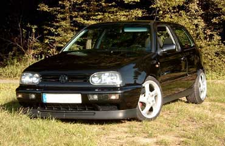
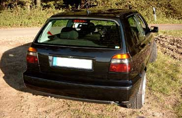
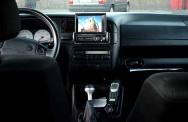
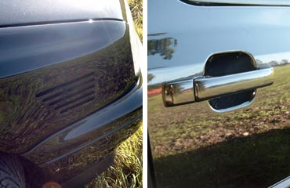
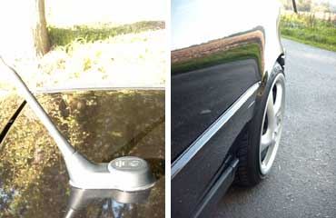

Extras
- Climatronic
- Teilleder
- el. FH und Außenspiegel
- Bordcomputer und Tempomat
- Zentralverriegelung
- Sportsitze
- Kopfstützen hinten
- Fahrer- und Beifahrerairbag
- rote Gurte
Motor
- 4 Zylinder TDI / 1896 ccm / 81 kW (110 PS)
Abgasanlage
- Serie
Bremse
- VA VR6 syncro mit ABS 288 x 25mm Girling
- HA Serien-Scheibenbremse
- rot lackierte Sättel
Felgen / Reifen
- Mille Miglia (vom 96er Porsche 911 Turbo)
- VA 7,5 x 17 ET 52, HA 9 x 17 ET 47
- H&R Lochkreisadapter 5 / 100 auf 5 / 130, 30mm stark
- Dunlop SP 9000 in 215 / 40 - ZR 17 83W
Fahrwerk
- Bilstein Gewinde PSS B14
- Wiechers Alu-Domstrebe poliert oben
- Wiechers Stahl-Strebe lackiert unten
Sonstige Umbauten
Außen
- Neulack Sommer 2003
- Frontscheibe mit Blaukeil
- Scheinwerfer GTI / VR6 in schwarz
- Plastik-Verbreiterungen entfernt
- Kotflügel VA gebördelt und 1cm gezogen
- Kotflügel HA gebördelt und 2,5cm gezogen
- T4-Luftschlitze
- US-Stoßstange hinten
- gecleante Heckklappe (Wischer & Zeichen)
Innen
- Alupedale vom Golf 25 Jahre GTI
- Clifford Concept 60 Alarm
- VW Triplex Antenne (GPS, GSM & Radio)
- Freisprechanlage THB für Nokia
;Motorraum
- div. polierte & lackierte Teile
Musikanlage
- Alpine CVA-1000R Anzeige & Bedieneinheit
- Alpine CHA-1214 12-fach CD-Wechsler
- Alpine MRP-F257 Flex5 5-Kanal Endstufe
- Emphaser Impulse 25 Bass
- Sony Playstation II
Kontakt
bene@vwclubms.de